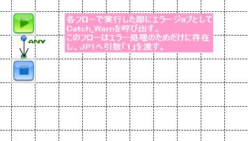

|
|
||
| プロジェクト名：ATRLNK010 ／ フロー名：Catch_Warn |
| Catch_Warnの説明 | |
● フロー画面

● このフローを参照しているコンポーネント
● フロープロパティ
| プロパティ名 | 設定値 |
|---|---|
| タイムアウト（秒） | 180 |
| 汎用エラー処理 | |
| 実行を許可するユーザー | |
| アプリケーションログ設定 | |
| ログ設定名 | (なし) |
| ログレベル | システム設定 |
| システムログに出力 | はい |
| セッション | 終了時に閉じる |
| HTTPでの呼出しを許可 | いいえ |
● コンポーネント一覧
| 番号 | コンポーネント名 | 種別 | 入力 コンポーネント |
出力 コンポーネント |
説明 | ログ |
|---|---|---|---|---|---|---|
| 1 | Start1 | Start | End1 | |||
| 2 | End1 | End | Start1 |
● 各コンポーネントの詳細
| 1. Start1コンポーネント | |
| 名前 | Start1 | |
|---|---|---|
| 種別 | Start | |
| 入力コンポーネント | ||
| 出力コンポーネント | End1 | |
| 説明 |
■ コンポーネントプロパティ
| プロパティ名 | 設定値 |
|---|---|
| 汎用 | |
| トランザクション化 | いいえ |
| チェックポイントを使用 | いいえ |
| 実行権限名 |
■ ストリーム情報(Output)
| プロパティ | |
|---|---|
| プロパティ名 | 設定値 |
| ストリーム型 | Any |
| 2. End1コンポーネント | |
| 名前 | End1 | |
|---|---|---|
| 種別 | End | |
| 入力コンポーネント | Start1 | |
| 出力コンポーネント | ||
| 説明 |
■ コンポーネントプロパティ
| プロパティ名 | 設定値 |
|---|---|
| トランザクション | ロールバック |
| 戻り値 | 1 |